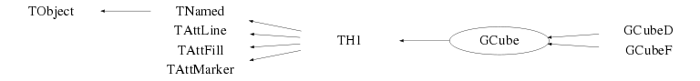

Function Members (Methods)
public:
| virtual | ~GCube() |
| void | TObject::AbstractMethod(const char* method) const |
| virtual Bool_t | TH1::Add(const TH1* h1, Double_t c1 = 1) |
| virtual Bool_t | TH1::Add(TF1* h1, Double_t c1 = 1, Option_t* option = "") |
| virtual Bool_t | TH1::Add(const TH1* h, const TH1* h2, Double_t c1 = 1, Double_t c2 = 1)MENU |
| virtual void | TH1::AddBinContent(Int_t bin) |
| virtual void | TH1::AddBinContent(Int_t bin, Double_t w) |
| static void | TH1::AddDirectory(Bool_t add = kTRUE) |
| static Bool_t | TH1::AddDirectoryStatus() |
| virtual Double_t | TH1::AndersonDarlingTest(const TH1* h2, Option_t* option = "") const |
| virtual Double_t | TH1::AndersonDarlingTest(const TH1* h2, Double_t& advalue) const |
| virtual void | TObject::AppendPad(Option_t* option = "") |
| virtual void | TH1::Browse(TBrowser* b) |
| virtual Int_t | BufferEmpty(Int_t action = 0) |
| virtual Int_t | BufferFill(Double_t, Double_t) |
| virtual Int_t | BufferFill(Double_t x, Double_t y, Double_t z, Double_t w) |
| virtual Bool_t | TH1::CanExtendAllAxes() const |
| ULong_t | TObject::CheckedHash() |
| virtual Double_t | TH1::Chi2Test(const TH1* h2, Option_t* option = "UU", Double_t* res = 0) const |
| virtual Double_t | TH1::Chi2TestX(const TH1* h2, Double_t& chi2, Int_t& ndf, Int_t& igood, Option_t* option = "UU", Double_t* res = 0) const |
| virtual Double_t | TH1::Chisquare(TF1* f1, Option_t* option = "") const |
| static TClass* | Class() |
| virtual const char* | TObject::ClassName() const |
| virtual void | TNamed::Clear(Option_t* option = "") |
| virtual void | TH1::ClearUnderflowAndOverflow() |
| virtual TObject* | TH1::Clone(const char* newname = 0) const |
| virtual Int_t | TNamed::Compare(const TObject* obj) const |
| virtual Double_t | TH1::ComputeIntegral(Bool_t onlyPositive = false) |
| virtual void | Copy(TObject& obj) const |
| virtual void | TObject::Delete(Option_t* option = "")MENU |
| virtual void | TH1::DirectoryAutoAdd(TDirectory*) |
| Int_t | TAttLine::DistancetoLine(Int_t px, Int_t py, Double_t xp1, Double_t yp1, Double_t xp2, Double_t yp2) |
| virtual Int_t | TH1::DistancetoPrimitive(Int_t px, Int_t py) |
| virtual Bool_t | TH1::Divide(const TH1* h1) |
| virtual Bool_t | TH1::Divide(TF1* f1, Double_t c1 = 1) |
| virtual Bool_t | TH1::Divide(const TH1* h1, const TH1* h2, Double_t c1 = 1, Double_t c2 = 1, Option_t* option = "")MENU |
| virtual void | TH1::Draw(Option_t* option = "") |
| virtual void | TObject::DrawClass() constMENU |
| virtual TObject* | TObject::DrawClone(Option_t* option = "") constMENU |
| virtual TH1* | TH1::DrawCopy(Option_t* option = "", const char* name_postfix = "_copy") const |
| virtual TH1* | TH1::DrawNormalized(Option_t* option = "", Double_t norm = 1) const |
| virtual void | TH1::DrawPanel()MENU |
| virtual void | TObject::Dump() constMENU |
| virtual void | TObject::Error(const char* method, const char* msgfmt) const |
| virtual void | TH1::Eval(TF1* f1, Option_t* option = "") |
| virtual void | TObject::Execute(const char* method, const char* params, Int_t* error = 0) |
| virtual void | TObject::Execute(TMethod* method, TObjArray* params, Int_t* error = 0) |
| virtual void | TH1::ExecuteEvent(Int_t event, Int_t px, Int_t py) |
| virtual void | TH1::ExtendAxis(Double_t x, TAxis* axis) |
| virtual void | TObject::Fatal(const char* method, const char* msgfmt) const |
| virtual TH1* | TH1::FFT(TH1* h_output, Option_t* option) |
| virtual Int_t | Fill(Double_t) |
| virtual Int_t | Fill(Double_t, Double_t) |
| virtual Int_t | Fill(const char*, Double_t) |
| virtual Int_t | Fill(Double_t, const char*, Double_t) |
| virtual Int_t | Fill(const char*, Double_t, Double_t) |
| virtual Int_t | Fill(const char*, const char*, Double_t) |
| virtual Int_t | Fill(Double_t x, Double_t y, Double_t z) |
| virtual Int_t | Fill(Double_t x, Double_t y, Double_t z, Double_t w) |
| virtual Int_t | Fill(const char* namex, const char* namey, const char* namez, Double_t w) |
| virtual void | TNamed::FillBuffer(char*& buffer) |
| virtual void | TH1::FillN(Int_t ntimes, const Double_t* x, const Double_t* w, Int_t stride = 1) |
| virtual void | TH1::FillN(Int_t, const Double_t*, const Double_t*, const Double_t*, Int_t) |
| virtual void | FillRandom(const char* fname, Int_t ntimes = 5000) |
| virtual void | FillRandom(TH1* h, Int_t ntimes = 5000) |
| virtual Int_t | TH1::FindBin(Double_t x, Double_t y = 0, Double_t z = 0) |
| virtual Int_t | FindFirstBinAbove(Double_t threshold = 0, Int_t axis = 1) const |
| virtual Int_t | TH1::FindFixBin(Double_t x, Double_t y = 0, Double_t z = 0) const |
| virtual Int_t | FindLastBinAbove(Double_t threshold = 0, Int_t axis = 1) const |
| virtual TObject* | TH1::FindObject(const char* name) const |
| virtual TObject* | TH1::FindObject(const TObject* obj) const |
| virtual TFitResultPtr | TH1::Fit(const char* formula, Option_t* option = "", Option_t* goption = "", Double_t xmin = 0, Double_t xmax = 0)MENU |
| virtual TFitResultPtr | TH1::Fit(TF1* f1, Option_t* option = "", Option_t* goption = "", Double_t xmin = 0, Double_t xmax = 0) |
| static Int_t | TH1::FitOptionsMake(Option_t* option, Foption_t& Foption) |
| virtual void | TH1::FitPanel()MENU |
| virtual void | FitSlicesZ(TF1* f1 = nullptr, Int_t binminx = 0, Int_t binmaxx = -1, Int_t binminy = 0, Int_t binmaxy = -1, Int_t cut = 0, Option_t* option = "QNR") |
| GCube() | |
| GCube(const char* name, const char* title, Int_t nbins, const Double_t* bins) | |
| GCube(const char* name, const char* title, Int_t nbins, const Float_t* bins) | |
| GCube(const char* name, const char* title, Int_t nbins, Double_t low, Double_t up) | |
| TH1* | TH1::GetAsymmetry(TH1* h2, Double_t c2 = 1, Double_t dc2 = 0) |
| virtual Color_t | TH1::GetAxisColor(Option_t* axis = "X") const |
| virtual Float_t | TH1::GetBarOffset() const |
| virtual Float_t | TH1::GetBarWidth() const |
| virtual Int_t | GetBin(Int_t binx, Int_t biny = 0, Int_t binz = 0) const |
| virtual Double_t | TH1::GetBinCenter(Int_t bin) const |
| virtual Double_t | TH1::GetBinContent(Int_t bin) const |
| virtual Double_t | TH1::GetBinContent(Int_t bin, Int_t) const |
| virtual Double_t | TH1::GetBinContent(Int_t bin, Int_t, Int_t) const |
| virtual Double_t | TH1::GetBinError(Int_t bin) const |
| virtual Double_t | TH1::GetBinError(Int_t binx, Int_t biny) const |
| virtual Double_t | TH1::GetBinError(Int_t binx, Int_t biny, Int_t binz) const |
| virtual Double_t | TH1::GetBinErrorLow(Int_t bin) const |
| virtual TH1::EBinErrorOpt | TH1::GetBinErrorOption() const |
| virtual Double_t | TH1::GetBinErrorUp(Int_t bin) const |
| virtual Double_t | TH1::GetBinLowEdge(Int_t bin) const |
| virtual Double_t | TH1::GetBinWidth(Int_t bin) const |
| virtual Double_t | TH1::GetBinWithContent(Double_t c, Int_t& binx, Int_t firstx = 0, Int_t lastx = 0, Double_t maxdiff = 0) const |
| virtual Double_t | GetBinWithContent2(Double_t c, Int_t& binx, Int_t& biny, Int_t& binz, Int_t firstxbin = 1, Int_t lastxbin = -1, Int_t firstybin = 1, Int_t lastybin = -1, Int_t firstzbin = 1, Int_t lastzbin = -1, Double_t maxdiff = 0) const |
| virtual void | TH1::GetBinXYZ(Int_t binglobal, Int_t& binx, Int_t& biny, Int_t& binz) const |
| const Double_t* | TH1::GetBuffer() const |
| Int_t | TH1::GetBufferLength() const |
| Int_t | TH1::GetBufferSize() const |
| virtual Double_t | TH1::GetCellContent(Int_t binx, Int_t biny) const |
| virtual Double_t | TH1::GetCellError(Int_t binx, Int_t biny) const |
| virtual void | TH1::GetCenter(Double_t* center) const |
| virtual Int_t | TH1::GetContour(Double_t* levels = 0) |
| virtual Double_t | TH1::GetContourLevel(Int_t level) const |
| virtual Double_t | TH1::GetContourLevelPad(Int_t level) const |
| virtual Double_t | GetCorrelationFactor(Int_t axis1 = 1, Int_t axis2 = 2) const |
| virtual Double_t | GetCovariance(Int_t axis1 = 1, Int_t axis2 = 2) const |
| TH1* | TH1::GetCumulative(Bool_t forward = kTRUE, const char* suffix = "_cumulative") const |
| static Int_t | TH1::GetDefaultBufferSize() |
| static Bool_t | TH1::GetDefaultSumw2() |
| virtual Int_t | TH1::GetDimension() const |
| TDirectory* | TH1::GetDirectory() const |
| virtual Option_t* | TObject::GetDrawOption() const |
| static Long_t | TObject::GetDtorOnly() |
| virtual Double_t | TH1::GetEffectiveEntries() const |
| virtual Double_t | TH1::GetEntries() const |
| virtual Color_t | TAttFill::GetFillColor() const |
| virtual Style_t | TAttFill::GetFillStyle() const |
| virtual TF1* | TH1::GetFunction(const char* name) const |
| virtual const char* | TObject::GetIconName() const |
| virtual Double_t* | TH1::GetIntegral() |
| virtual Double_t | TH1::GetKurtosis(Int_t axis = 1) const |
| virtual Color_t | TH1::GetLabelColor(Option_t* axis = "X") const |
| virtual Style_t | TH1::GetLabelFont(Option_t* axis = "X") const |
| virtual Float_t | TH1::GetLabelOffset(Option_t* axis = "X") const |
| virtual Float_t | TH1::GetLabelSize(Option_t* axis = "X") const |
| virtual Color_t | TAttLine::GetLineColor() const |
| virtual Style_t | TAttLine::GetLineStyle() const |
| virtual Width_t | TAttLine::GetLineWidth() const |
| TList* | TH1::GetListOfFunctions() const |
| virtual void | TH1::GetLowEdge(Double_t* edge) const |
| virtual Color_t | TAttMarker::GetMarkerColor() const |
| virtual Size_t | TAttMarker::GetMarkerSize() const |
| virtual Style_t | TAttMarker::GetMarkerStyle() const |
| virtual Double_t | TH1::GetMaximum(Double_t maxval = 3.40282347E+38F) const |
| virtual Int_t | TH1::GetMaximumBin() const |
| virtual Int_t | TH1::GetMaximumBin(Int_t& locmax, Int_t& locmay, Int_t& locmaz) const |
| virtual Double_t | TH1::GetMaximumStored() const |
| virtual Double_t | TH1::GetMean(Int_t axis = 1) const |
| virtual Double_t | TH1::GetMeanError(Int_t axis = 1) const |
| virtual Double_t | TH1::GetMinimum(Double_t minval = -3.40282347E+38F) const |
| virtual void | TH1::GetMinimumAndMaximum(Double_t& min, Double_t& max) const |
| virtual Int_t | TH1::GetMinimumBin() const |
| virtual Int_t | TH1::GetMinimumBin(Int_t& locmix, Int_t& locmiy, Int_t& locmiz) const |
| virtual Double_t | TH1::GetMinimumStored() const |
| virtual const char* | TNamed::GetName() const |
| virtual Int_t | TH1::GetNbinsX() const |
| virtual Int_t | TH1::GetNbinsY() const |
| virtual Int_t | TH1::GetNbinsZ() const |
| virtual Int_t | TH1::GetNcells() const |
| virtual Int_t | TH1::GetNdivisions(Option_t* axis = "X") const |
| virtual Double_t | TH1::GetNormFactor() const |
| virtual char* | TH1::GetObjectInfo(Int_t px, Int_t py) const |
| static Bool_t | TObject::GetObjectStat() |
| virtual Option_t* | TH1::GetOption() const |
| TVirtualHistPainter* | TH1::GetPainter(Option_t* option = "") |
| virtual Int_t | TH1::GetQuantiles(Int_t nprobSum, Double_t* q, const Double_t* probSum = 0) |
| virtual Double_t | TH1::GetRandom() const |
| virtual void | GetRandom3(Double_t& x, Double_t& y, Double_t& z) |
| Double_t | TH1::GetRMS(Int_t axis = 1) const |
| Double_t | TH1::GetRMSError(Int_t axis = 1) const |
| virtual Double_t | TH1::GetSkewness(Int_t axis = 1) const |
| TH1::EStatOverflows | TH1::GetStatOverflows() const |
| virtual void | GetStats(Double_t* stats) const |
| virtual Double_t | TH1::GetStdDev(Int_t axis = 1) const |
| virtual Double_t | TH1::GetStdDevError(Int_t axis = 1) const |
| virtual Double_t | TH1::GetSumOfWeights() const |
| virtual TArrayD* | TH1::GetSumw2() |
| virtual const TArrayD* | TH1::GetSumw2() const |
| virtual Int_t | TH1::GetSumw2N() const |
| virtual Float_t | TH1::GetTickLength(Option_t* axis = "X") const |
| virtual const char* | TNamed::GetTitle() const |
| virtual Style_t | TH1::GetTitleFont(Option_t* axis = "X") const |
| virtual Float_t | TH1::GetTitleOffset(Option_t* axis = "X") const |
| virtual Float_t | TH1::GetTitleSize(Option_t* axis = "X") const |
| virtual UInt_t | TObject::GetUniqueID() const |
| TAxis* | TH1::GetXaxis() |
| const TAxis* | TH1::GetXaxis() const |
| TAxis* | TH1::GetYaxis() |
| const TAxis* | TH1::GetYaxis() const |
| TAxis* | TH1::GetZaxis() |
| const TAxis* | TH1::GetZaxis() const |
| virtual Bool_t | TObject::HandleTimer(TTimer* timer) |
| virtual ULong_t | TNamed::Hash() const |
| Bool_t | TObject::HasInconsistentHash() const |
| virtual void | TObject::Info(const char* method, const char* msgfmt) const |
| virtual Bool_t | TObject::InheritsFrom(const char* classname) const |
| virtual Bool_t | TObject::InheritsFrom(const TClass* cl) const |
| virtual void | TObject::Inspect() constMENU |
| virtual Double_t | Integral(Option_t* option = "") const |
| virtual Double_t | Integral(Int_t firstxbin, Int_t lastxbin, Int_t firstybin, Int_t lastybin, Int_t firstzbin, Int_t lastzbin, Option_t* option = "") const |
| virtual Double_t | IntegralAndError(Int_t firstxbin, Int_t lastxbin, Int_t firstybin, Int_t lastybin, Int_t firstzbin, Int_t lastzbin, Double_t& error, Option_t* option = "") const |
| virtual Double_t | Interpolate(Double_t) |
| virtual Double_t | Interpolate(Double_t, Double_t) |
| virtual Double_t | Interpolate(Double_t, Double_t, Double_t) |
| void | TObject::InvertBit(UInt_t f) |
| virtual TClass* | IsA() const |
| Bool_t | TH1::IsBinOverflow(Int_t bin, Int_t axis = 0) const |
| Bool_t | TH1::IsBinUnderflow(Int_t bin, Int_t axis = 0) const |
| virtual Bool_t | TObject::IsEqual(const TObject* obj) const |
| virtual Bool_t | TObject::IsFolder() const |
| Bool_t | TObject::IsOnHeap() const |
| virtual Bool_t | TNamed::IsSortable() const |
| virtual Bool_t | TAttFill::IsTransparent() const |
| Bool_t | TObject::IsZombie() const |
| virtual Double_t | KolmogorovTest(const TH1* h2, Option_t* option = "") const |
| virtual void | TH1::LabelsDeflate(Option_t* axis = "X") |
| virtual void | TH1::LabelsInflate(Option_t* axis = "X") |
| virtual void | TH1::LabelsOption(Option_t* option = "h", Option_t* axis = "X") |
| virtual void | TNamed::ls(Option_t* option = "") const |
| void | TObject::MayNotUse(const char* method) const |
| virtual Long64_t | Merge(TCollection* list) |
| virtual void | TAttLine::Modify() |
| virtual Bool_t | TH1::Multiply(const TH1* h1) |
| virtual Bool_t | TH1::Multiply(TF1* f1, Double_t c1 = 1) |
| virtual Bool_t | TH1::Multiply(const TH1* h1, const TH1* h2, Double_t c1 = 1, Double_t c2 = 1, Option_t* option = "")MENU |
| virtual Bool_t | TObject::Notify() |
| void | TObject::Obsolete(const char* method, const char* asOfVers, const char* removedFromVers) const |
| void | TObject::operator delete(void* ptr) |
| void | TObject::operator delete(void* ptr, void* vp) |
| void | TObject::operator delete[](void* ptr) |
| void | TObject::operator delete[](void* ptr, void* vp) |
| void* | TObject::operator new(size_t sz) |
| void* | TObject::operator new(size_t sz, void* vp) |
| void* | TObject::operator new[](size_t sz) |
| void* | TObject::operator new[](size_t sz, void* vp) |
| virtual void | TH1::Paint(Option_t* option = "") |
| virtual void | TObject::Pop() |
| virtual void | TH1::Print(Option_t* option = "") const |
| virtual TH1D* | Projection(const char* name = "_pr", Int_t firstBiny = 0, Int_t lastBiny = -1, Int_t firstBinz = 0, Int_t lastBinz = -1, Option_t* option = "") const |
| virtual void | PutStats(Double_t* stats) |
| virtual Int_t | TObject::Read(const char* name) |
| virtual TH1* | TH1::Rebin(Int_t ngroup = 2, const char* newname = "", const Double_t* xbins = 0)MENU |
| virtual GCube* | Rebin3D(Int_t ngroup = 2, const char* newname = "") |
| virtual void | TH1::RebinAxis(Double_t x, TAxis* axis) |
| virtual TH1* | TH1::RebinX(Int_t ngroup = 2, const char* newname = "") |
| virtual void | TH1::Rebuild(Option_t* option = "") |
| virtual void | TH1::RecursiveRemove(TObject* obj) |
| virtual void | Reset(Option_t* option = "") |
| virtual void | TAttFill::ResetAttFill(Option_t* option = "") |
| virtual void | TAttLine::ResetAttLine(Option_t* option = "") |
| virtual void | TAttMarker::ResetAttMarker(Option_t* toption = "") |
| void | TObject::ResetBit(UInt_t f) |
| virtual void | TH1::ResetStats() |
| virtual void | TObject::SaveAs(const char* filename = "", Option_t* option = "") constMENU |
| virtual void | TAttFill::SaveFillAttributes(ostream& out, const char* name, Int_t coldef = 1, Int_t stydef = 1001) |
| virtual void | TAttLine::SaveLineAttributes(ostream& out, const char* name, Int_t coldef = 1, Int_t stydef = 1, Int_t widdef = 1) |
| virtual void | TAttMarker::SaveMarkerAttributes(ostream& out, const char* name, Int_t coldef = 1, Int_t stydef = 1, Int_t sizdef = 1) |
| virtual void | TH1::SavePrimitive(ostream& out, Option_t* option = "") |
| virtual void | TH1::Scale(Double_t c1 = 1, Option_t* option = "") |
| virtual void | TH1::SetAxisColor(Color_t color = 1, Option_t* axis = "X") |
| virtual void | TH1::SetAxisRange(Double_t xmin, Double_t xmax, Option_t* axis = "X") |
| virtual void | TH1::SetBarOffset(Float_t offset = 0.25) |
| virtual void | TH1::SetBarWidth(Float_t width = 0.5) |
| virtual void | TH1::SetBinContent(Int_t bin, Double_t content) |
| virtual void | TH1::SetBinContent(Int_t bin, Int_t, Double_t content) |
| virtual void | TH1::SetBinContent(Int_t bin, Int_t, Int_t, Double_t content) |
| virtual void | TH1::SetBinError(Int_t bin, Double_t error) |
| virtual void | TH1::SetBinError(Int_t binx, Int_t biny, Double_t error) |
| virtual void | TH1::SetBinError(Int_t binx, Int_t biny, Int_t binz, Double_t error) |
| virtual void | TH1::SetBinErrorOption(TH1::EBinErrorOpt type) |
| virtual void | TH1::SetBins(Int_t nx, const Double_t* xBins) |
| virtual void | TH1::SetBins(Int_t nx, Double_t xmin, Double_t xmax) |
| virtual void | TH1::SetBins(Int_t nx, const Double_t* xBins, Int_t ny, const Double_t* yBins) |
| virtual void | TH1::SetBins(Int_t nx, Double_t xmin, Double_t xmax, Int_t ny, Double_t ymin, Double_t ymax) |
| virtual void | TH1::SetBins(Int_t nx, const Double_t* xBins, Int_t ny, const Double_t* yBins, Int_t nz, const Double_t* zBins) |
| virtual void | TH1::SetBins(Int_t nx, Double_t xmin, Double_t xmax, Int_t ny, Double_t ymin, Double_t ymax, Int_t nz, Double_t zmin, Double_t zmax) |
| virtual void | TH1::SetBinsLength(Int_t = -1) |
| void | TObject::SetBit(UInt_t f) |
| void | TObject::SetBit(UInt_t f, Bool_t set) |
| virtual void | TH1::SetBuffer(Int_t buffersize, Option_t* option = "") |
| virtual UInt_t | TH1::SetCanExtend(UInt_t extendBitMask) |
| virtual void | TH1::SetCellContent(Int_t binx, Int_t biny, Double_t content) |
| virtual void | TH1::SetCellError(Int_t binx, Int_t biny, Double_t content) |
| virtual void | TH1::SetContent(const Double_t* content) |
| virtual void | TH1::SetContour(Int_t nlevels, const Double_t* levels = 0) |
| virtual void | TH1::SetContourLevel(Int_t level, Double_t value) |
| static void | TH1::SetDefaultBufferSize(Int_t buffersize = 1000) |
| static void | TH1::SetDefaultSumw2(Bool_t sumw2 = kTRUE) |
| virtual void | TH1::SetDirectory(TDirectory* dir) |
| virtual void | TObject::SetDrawOption(Option_t* option = "")MENU |
| static void | TObject::SetDtorOnly(void* obj) |
| virtual void | TH1::SetEntries(Double_t n) |
| virtual void | TH1::SetError(const Double_t* error) |
| virtual void | TAttFill::SetFillAttributes()MENU |
| virtual void | TAttFill::SetFillColor(Color_t fcolor) |
| virtual void | TAttFill::SetFillColorAlpha(Color_t fcolor, Float_t falpha) |
| virtual void | TAttFill::SetFillStyle(Style_t fstyle) |
| virtual void | TH1::SetLabelColor(Color_t color = 1, Option_t* axis = "X") |
| virtual void | TH1::SetLabelFont(Style_t font = 62, Option_t* axis = "X") |
| virtual void | TH1::SetLabelOffset(Float_t offset = 0.0050000000000000001, Option_t* axis = "X") |
| virtual void | TH1::SetLabelSize(Float_t size = 0.02, Option_t* axis = "X") |
| virtual void | TAttLine::SetLineAttributes()MENU |
| virtual void | TAttLine::SetLineColor(Color_t lcolor) |
| virtual void | TAttLine::SetLineColorAlpha(Color_t lcolor, Float_t lalpha) |
| virtual void | TAttLine::SetLineStyle(Style_t lstyle) |
| virtual void | TAttLine::SetLineWidth(Width_t lwidth) |
| virtual void | TAttMarker::SetMarkerAttributes()MENU |
| virtual void | TAttMarker::SetMarkerColor(Color_t mcolor = 1) |
| virtual void | TAttMarker::SetMarkerColorAlpha(Color_t mcolor, Float_t malpha) |
| virtual void | TAttMarker::SetMarkerSize(Size_t msize = 1) |
| virtual void | TAttMarker::SetMarkerStyle(Style_t mstyle = 1) |
| virtual void | TH1::SetMaximum(Double_t maximum = -1111)MENU |
| virtual void | TH1::SetMinimum(Double_t minimum = -1111)MENU |
| virtual void | TH1::SetName(const char* name)MENU |
| virtual void | TH1::SetNameTitle(const char* name, const char* title) |
| virtual void | TH1::SetNdivisions(Int_t n = 510, Option_t* axis = "X") |
| virtual void | TH1::SetNormFactor(Double_t factor = 1) |
| static void | TObject::SetObjectStat(Bool_t stat) |
| virtual void | TH1::SetOption(Option_t* option = " ") |
| virtual void | SetShowProjection(const char* option = "xy", Int_t nbins = 1)MENU |
| void | TH1::SetStatOverflows(TH1::EStatOverflows statOverflows) |
| virtual void | TH1::SetStats(Bool_t stats = kTRUE)MENU |
| virtual void | TH1::SetTickLength(Float_t length = 0.02, Option_t* axis = "X") |
| virtual void | TH1::SetTitle(const char* title)MENU |
| virtual void | TH1::SetTitleFont(Style_t font = 62, Option_t* axis = "X") |
| virtual void | TH1::SetTitleOffset(Float_t offset = 1, Option_t* axis = "X") |
| virtual void | TH1::SetTitleSize(Float_t size = 0.02, Option_t* axis = "X") |
| virtual void | TObject::SetUniqueID(UInt_t uid) |
| virtual void | TH1::SetXTitle(const char* title) |
| virtual void | TH1::SetYTitle(const char* title) |
| virtual void | TH1::SetZTitle(const char* title) |
| virtual TH1* | ShowBackground(Int_t niter = 20, Option_t* option = "same") |
| virtual void | ShowMembers(TMemberInspector& insp) const |
| virtual Int_t | ShowPeaks(Double_t sigma = 2, Option_t* option = "", Double_t threshold = 0.050000000000000003)MENU |
| virtual Int_t | TNamed::Sizeof() const |
| virtual void | Smooth(Int_t ntimes = 1, Option_t* option = "")MENU |
| static void | TH1::SmoothArray(Int_t NN, Double_t* XX, Int_t ntimes = 1) |
| static void | TH1::StatOverflows(Bool_t flag = kTRUE) |
| virtual void | Streamer(TBuffer&) |
| void | StreamerNVirtual(TBuffer& ClassDef_StreamerNVirtual_b) |
| virtual void | TH1::Sumw2(Bool_t flag = kTRUE) |
| virtual void | TObject::SysError(const char* method, const char* msgfmt) const |
| Bool_t | TObject::TestBit(UInt_t f) const |
| Int_t | TObject::TestBits(UInt_t f) const |
| static TH1* | TH1::TransformHisto(TVirtualFFT* fft, TH1* h_output, Option_t* option) |
| virtual void | TH1::UseCurrentStyle() |
| virtual void | TObject::Warning(const char* method, const char* msgfmt) const |
| virtual Int_t | TObject::Write(const char* name = 0, Int_t option = 0, Int_t bufsize = 0) |
| virtual Int_t | TObject::Write(const char* name = 0, Int_t option = 0, Int_t bufsize = 0) const |
protected:
| virtual Int_t | TH1::AutoP2FindLimits(Double_t min, Double_t max) |
| static Int_t | TH1::AutoP2GetBins(Int_t n) |
| static Double_t | TH1::AutoP2GetPower2(Double_t x, Bool_t next = kTRUE) |
| static bool | TH1::CheckAxisLimits(const TAxis* a1, const TAxis* a2) |
| static bool | TH1::CheckBinLabels(const TAxis* a1, const TAxis* a2) |
| static bool | TH1::CheckBinLimits(const TAxis* a1, const TAxis* a2) |
| static bool | TH1::CheckConsistency(const TH1* h1, const TH1* h2) |
| static bool | TH1::CheckConsistentSubAxes(const TAxis* a1, Int_t firstBin1, Int_t lastBin1, const TAxis* a2, Int_t firstBin2 = 0, Int_t lastBin2 = 0) |
| static bool | TH1::CheckEqualAxes(const TAxis* a1, const TAxis* a2) |
| virtual void | TObject::DoError(int level, const char* location, const char* fmt, va_list va) const |
| virtual void | TH1::DoFillN(Int_t ntimes, const Double_t* x, const Double_t* w, Int_t stride = 1) |
| virtual Double_t | DoIntegral(Int_t binx1, Int_t binx2, Int_t biny1, Int_t biny2, Int_t binz1, Int_t binz2, Double_t& error, Option_t* option, Bool_t doError = kFALSE) const |
| virtual Bool_t | TH1::FindNewAxisLimits(const TAxis* axis, const Double_t point, Double_t& newMin, Double_t& newMax) |
| virtual Double_t | TH1::GetBinErrorSqUnchecked(Int_t bin) const |
| Bool_t | TH1::GetStatOverflowsBehaviour() const |
| Bool_t | TH1::IsEmpty() const |
| void | TObject::MakeZombie() |
| static Bool_t | TH1::RecomputeAxisLimits(TAxis& destAxis, const TAxis& anAxis) |
| virtual Double_t | TH1::RetrieveBinContent(Int_t bin) const |
| static Bool_t | TH1::SameLimitsAndNBins(const TAxis& axis1, const TAxis& axis2) |
| virtual void | TH1::SavePrimitiveHelp(ostream& out, const char* hname, Option_t* option = "") |
| virtual void | TH1::UpdateBinContent(Int_t bin, Double_t content) |
Data Members
public:
| static TH1::(anonymous) | TH1::kAllAxes | |
| static TH1::EStatusBits | TH1::kAutoBinPTwo | |
| static TObject::(anonymous) | TObject::kBitMask | |
| static TObject::EStatusBits | TObject::kCanDelete | |
| static TObject::EStatusBits | TObject::kCannotPick | |
| static TH1::EStatOverflows | TH1::kConsider | |
| static TObject::EStatusBits | TObject::kHasUUID | |
| static TH1::EStatOverflows | TH1::kIgnore | |
| static TObject::(anonymous) | TObject::kInconsistent | |
| static TObject::EStatusBits | TObject::kInvalidObject | |
| static TH1::EStatusBits | TH1::kIsAverage | |
| static TH1::EStatusBits | TH1::kIsNotW | |
| static TObject::(anonymous) | TObject::kIsOnHeap | |
| static TObject::EStatusBits | TObject::kIsReferenced | |
| static TH1::EStatusBits | TH1::kIsZoomed | |
| static TH1::EStatusBits | TH1::kLogX | |
| static TObject::EStatusBits | TObject::kMustCleanup | |
| static TH1::EStatOverflows | TH1::kNeutral | |
| static TH1::(anonymous) | TH1::kNoAxis | |
| static TObject::EStatusBits | TObject::kNoContextMenu | |
| static TH1::EStatusBits | TH1::kNoStats | |
| static TH1::EStatusBits | TH1::kNoTitle | |
| static TH1::EBinErrorOpt | TH1::kNormal | |
| static TObject::(anonymous) | TObject::kNotDeleted | |
| static TH1::(anonymous) | TH1::kNstat | |
| static TObject::EDeprecatedStatusBits | TObject::kObjInCanvas | |
| static TObject::(anonymous) | TObject::kOverwrite | |
| static TH1::EBinErrorOpt | TH1::kPoisson | |
| static TH1::EBinErrorOpt | TH1::kPoisson2 | |
| static TObject::(anonymous) | TObject::kSingleKey | |
| static TH1::EStatusBits | TH1::kUserContour | |
| static TObject::(anonymous) | TObject::kWriteDelete | |
| static TH1::(anonymous) | TH1::kXaxis | |
| static TH1::(anonymous) | TH1::kYaxis | |
| static TH1::(anonymous) | TH1::kZaxis | |
| static TObject::(anonymous) | TObject::kZombie |
protected:
| Short_t | TH1::fBarOffset | (1000*offset) for bar charts or legos |
| Short_t | TH1::fBarWidth | (1000*width) for bar charts or legos |
| TH1::EBinErrorOpt | TH1::fBinStatErrOpt | option for bin statistical errors |
| Double_t* | TH1::fBuffer | [fBufferSize] entry buffer |
| Int_t | TH1::fBufferSize | fBuffer size |
| TArrayD | TH1::fContour | Array to display contour levels |
| Int_t | TH1::fDimension | !Histogram dimension (1, 2 or 3 dim) |
| TDirectory* | TH1::fDirectory | !Pointer to directory holding this histogram |
| Double_t | TH1::fEntries | Number of entries |
| Color_t | TAttFill::fFillColor | Fill area color |
| Style_t | TAttFill::fFillStyle | Fill area style |
| TList* | TH1::fFunctions | ->Pointer to list of functions (fits and user) |
| Double_t* | TH1::fIntegral | !Integral of bins used by GetRandom |
| Color_t | TAttLine::fLineColor | Line color |
| Style_t | TAttLine::fLineStyle | Line style |
| Width_t | TAttLine::fLineWidth | Line width |
| Color_t | TAttMarker::fMarkerColor | Marker color |
| Size_t | TAttMarker::fMarkerSize | Marker size |
| Style_t | TAttMarker::fMarkerStyle | Marker style |
| TH2* | fMatrix | ! Transient pointer to the 2D-Matrix used in Draw() or GetMatrix() |
| Double_t | TH1::fMaximum | Maximum value for plotting |
| Double_t | TH1::fMinimum | Minimum value for plotting |
| TString | TNamed::fName | object identifier |
| Int_t | TH1::fNcells | number of bins(1D), cells (2D) +U/Overflows |
| Double_t | TH1::fNormFactor | Normalization factor |
| TString | TH1::fOption | histogram options |
| TVirtualHistPainter* | TH1::fPainter | !pointer to histogram painter |
| TH1::EStatOverflows | TH1::fStatOverflows | per object flag to use under/overflows in statistics |
| TArrayD | TH1::fSumw2 | Array of sum of squares of weights |
| TString | TNamed::fTitle | object title |
| Double_t | TH1::fTsumw | Total Sum of weights |
| Double_t | TH1::fTsumw2 | Total Sum of squares of weights |
| Double_t | TH1::fTsumwx | Total Sum of weight*X |
| Double_t | TH1::fTsumwx2 | Total Sum of weight*X*X |
| Double_t | fTsumwxy | Total Sum of weight*X*Y |
| Double_t | fTsumwxz | Total Sum of weight*X*Z |
| Double_t | fTsumwy | Total Sum of weight*Y |
| Double_t | fTsumwy2 | Total Sum of weight*Y*Y |
| Double_t | fTsumwyz | Total Sum of weight*Y*Z |
| Double_t | fTsumwz | Total Sum of weight*Z |
| Double_t | fTsumwz2 | Total Sum of weight*Z*Z |
| TAxis | TH1::fXaxis | X axis descriptor |
| TAxis | TH1::fYaxis | Y axis descriptor |
| TAxis | TH1::fZaxis | Z axis descriptor |
| static Bool_t | TH1::fgAddDirectory | !flag to add histograms to the directory |
| static Int_t | TH1::fgBufferSize | !default buffer size for automatic histograms |
| static Bool_t | TH1::fgDefaultSumw2 | !flag to call TH1::Sumw2 automatically at histogram creation time |
| static Bool_t | TH1::fgStatOverflows | !flag to use under/overflows in statistics |
Class Charts



Function documentation
GCube()
Int_t BufferEmpty(Int_t action = 0)
Fill histogram with all entries in the buffer. action = -1 histogram is reset and refilled from the buffer (called by THistPainter::Paint) action = 0 histogram is filled from the buffer action = 1 histogram is filled and buffer is deleted The buffer is automatically deleted when the number of entries in the buffer is greater than the number of entries in the histogram
Double_t DoIntegral(Int_t binx1, Int_t binx2, Int_t biny1, Int_t biny2, Int_t binz1, Int_t binz2, Double_t& error, Option_t* option, Bool_t doError = kFALSE) const
internal function compute integral and optionally the error between the limits specified by the bin number values working for all histograms (1D, 2D and 3D)
Int_t Fill(const char* namex, const char* namey, const char* namez, Double_t w)
Increment cell defined by namex,namey,namez by a weight w if x or/and y is less than the low-edge of the corresponding axis first bin, the Underflow cell is incremented. if x or/and y is greater than the upper edge of corresponding axis last bin, the Overflow cell is incremented. If the storage of the sum of squares of weights has been triggered, via the function Sumw2, then the sum of the squares of weights is incremented by w^2 in the cell corresponding to x,y.
void FillRandom(const char* fname, Int_t ntimes = 5000)
*-*-*-*-*-*-*Fill histogram following distribution in function fname*-*-*-* *-* ======================================================= *-* *-* The distribution contained in the function fname (TF2) is integrated *-* over the channel contents. *-* It is normalized to 1. *-* Getting one random number implies: *-* - Generating a random number between 0 and 1 (say r1) *-* - Look in which bin in the normalized integral r1 corresponds to *-* - Fill histogram channel *-* ntimes random numbers are generated *-* *-* One can also call TF2::GetRandom2 to get a random variate from a function. *-* *-*-*-*-*-*-*-*-*-*-*-*-*-*-*-*-*-*-*-*-*-*-*-*-*-*-*-*-*-**-*-*-*-*-*-*-*
void FillRandom(TH1* h, Int_t ntimes = 5000)
*-*-*-*-*-*-*Fill histogram following distribution in histogram h*-*-*-* *-* ==================================================== *-* *-* The distribution contained in the histogram h (TH2) is integrated *-* over the channel contents. *-* It is normalized to 1. *-* Getting one random number implies: *-* - Generating a random number between 0 and 1 (say r1) *-* - Look in which bin in the normalized integral r1 corresponds to *-* - Fill histogram channel *-* ntimes random numbers are generated *-* *-*-*-*-*-*-*-*-*-*-*-*-*-*-*-*-*-*-*-*-*-*-*-*-*-*-*-*-*-**-*-*-*-*-*-*-*
Int_t FindFirstBinAbove(Double_t threshold = 0, Int_t axis = 1) const
find first bin with content > threshold for axis (1=x, 2=y, 3=z) if no bins with content > threshold is found the function returns -1.
Int_t FindLastBinAbove(Double_t threshold = 0, Int_t axis = 1) const
find last bin with content > threshold for axis (1=x, 2=y, 3=z) if no bins with content > threshold is found the function returns -1.
void FitSlicesZ(TF1* f1 = nullptr, Int_t binminx = 0, Int_t binmaxx = -1, Int_t binminy = 0, Int_t binmaxy = -1, Int_t cut = 0, Option_t* option = "QNR")
Double_t GetBinWithContent2(Double_t c, Int_t& binx, Int_t& biny, Int_t& binz, Int_t firstxbin = 1, Int_t lastxbin = -1, Int_t firstybin = 1, Int_t lastybin = -1, Int_t firstzbin = 1, Int_t lastzbin = -1, Double_t maxdiff = 0) const
compute first cell (binx,biny,binz) in the range [firstxbin,lastxbin][firstybin,lastybin][firstzbin,lastzbin]
for which diff = abs(cell_content-c) <= maxdiff
In case several cells in the specified range with diff=0 are found
the first cell found is returned in binx,biny,binz.
In case several cells in the specified range satisfy diff <=maxdiff
the cell with the smallest difference is returned in binx,biny,binz.
In all cases the function returns the smallest difference.
NOTE1: if firstxbin < 0, firstxbin is set to 1
if(lastxbin < firstxbin then lastxbin is set to the number of bins in X
ie if firstxbin=1 and lastxbin=0 (default) the search is on all bins in X except
for X's under- and overflow bins.
if firstybin < 0, firstybin is set to 1
if(lastybin < firstybin then lastybin is set to the number of bins in Y
ie if firstybin=1 and lastybin=0 (default) the search is on all bins in Y except
for Y's under- and overflow bins.
if firstzbin < 0, firstzbin is set to 1
if(lastzbin < firstzbin then lastzbin is set to the number of bins in Z
ie if firstzbin=1 and lastzbin=0 (default) the search is on all bins in Z except
for Z's under- and overflow bins.
NOTE2: if maxdiff=0 (default), the first cell with content=c is returned.
Double_t GetCorrelationFactor(Int_t axis1 = 1, Int_t axis2 = 2) const
*-*-*-*-*-*-*-*Return correlation factor between axis1 and axis2*-*-*-*-* *-* ====================================================
Double_t GetCovariance(Int_t axis1 = 1, Int_t axis2 = 2) const
*-*-*-*-*-*-*-*Return covariance between axis1 and axis2*-*-*-*-* *-* ====================================================
void GetRandom3(Double_t& x, Double_t& y, Double_t& z)
return 3 random numbers along axis x, y, and z distributed according the cellcontents of a 3-dim histogram return a NaN if the histogram has a bin with negative content
void GetStats(Double_t* stats) const
fill the array stats from the contents of this histogram The array stats must be correctly dimensionned in the calling program. stats[0] = sumw stats[1] = sumw2 stats[2] = sumwx stats[3] = sumwx2 stats[4] = sumwy stats[5] = sumwy2 stats[6] = sumwxy stats[7] = sumwz stats[8] = sumwz2 stats[9] = sumwxz stats[10] = sumwyz If no axis-subranges are specified (via TAxis::SetRange), the array stats is simply a copy of the statistics quantities computed at filling time. If sub-ranges are specified, the function recomputes these quantities from the bin contents in the current axis ranges. Note that the mean value/RMS is computed using the bins in the currently defined ranges (see TAxis::SetRange). By default the ranges include all bins from 1 to nbins included, excluding underflows and overflows. To force the underflows and overflows in the computation, one must call the static function TH1::StatOverflows(kTRUE) before filling the histogram.
Double_t Integral(Option_t* option = "") const
Return integral of bin contents. Only bins in the bins range are considered.
By default the integral is computed as the sum of bin contents in the range.
if option "width" is specified, the integral is the sum of
the bin contents multiplied by the bin width in x and in y.
Double_t Integral(Int_t firstxbin, Int_t lastxbin, Int_t firstybin, Int_t lastybin, Int_t firstzbin, Int_t lastzbin, Option_t* option = "") const
Return integral of bin contents in range [firstxbin,lastxbin],[firstybin,lastybin],[firstzbin,lastzbin]
for a 3-D histogram
By default the integral is computed as the sum of bin contents in the range.
if option "width" is specified, the integral is the sum of
the bin contents multiplied by the bin width in x, y, and z.
Double_t IntegralAndError(Int_t firstxbin, Int_t lastxbin, Int_t firstybin, Int_t lastybin, Int_t firstzbin, Int_t lastzbin, Double_t& error, Option_t* option = "") const
Return integral of bin contents in range [firstxbin,lastxbin],[firstybin,lastybin],[firstzbin,lastzbin]
for a 3-D histogram. Calculates also the integral error using error propagation
from the bin errors assumming that all the bins are uncorrelated.
By default the integral is computed as the sum of bin contents in the range.
if option "width" is specified, the integral is the sum of
the bin contents multiplied by the bin width in x, y, and z.
Double_t Interpolate(Double_t , Double_t , Double_t )
Given a point P(x,y,z), Interpolate approximates the value via trilinear interpolation based on the 8 nearest bin center points ( corner of the cube surronding the points) The Algorithm is described in http://en.wikipedia.org/wiki/Trilinear_interpolation The given values (x,y,z) must be between first bin center and last bin center for each coordinate: fXAxis.GetBinCenter(1) < x < fXaxis.GetBinCenter(nbinX) AND fYAxis.GetBinCenter(1) < y < fYaxis.GetBinCenter(nbinY) AND fZAxis.GetBinCenter(1) < z < fZaxis.GetBinCenter(nbinZ)
Double_t KolmogorovTest(const TH1* h2, Option_t* option = "") const
Statistical test of compatibility in shape between
THIS histogram and h3, using Kolmogorov test.
Default: Ignore under- and overflow bins in comparison
option is a character string to specify options
"U" include Underflows in test
"O" include Overflows
"N" include comparison of normalizations
"D" Put out a line of "Debug" printout
"M" Return the Maximum Kolmogorov distance instead of prob
The returned function value is the probability of test
(much less than one means NOT compatible)
The KS test uses the distance between the pseudo-CDF's obtained
from the histogram. Since in more than 1D the order for generating the pseudo-CDF is
arbitrary, we use the pseudo-CDF's obtained from all the possible 6 combinatons of the 3 axis.
The average of all the maximum distances obtained is used in the tests.
Code adapted by Rene Brun from original HBOOK routine HDIFF
Long64_t Merge(TCollection* list)
Add all histograms in the collection to this histogram. This function computes the min/max for the axes, compute a new number of bins, if necessary, add bin contents, errors and statistics. If overflows are present and limits are different the function will fail. The function returns the total number of entries in the result histogram if the merge is successfull, -1 otherwise. IMPORTANT remark. The 2 axis x and y may have different number of bins and different limits, BUT the largest bin width must be a multiple of the smallest bin width and the upper limit must also be a multiple of the bin width.
TH1D* Projection(const char* name = "_pr", Int_t firstBiny = 0, Int_t lastBiny = -1, Int_t firstBinz = 0, Int_t lastBinz = -1, Option_t* option = "") const
method for performing projection
GCube* Rebin3D(Int_t ngroup = 2, const char* newname = "")
-*-*-*Rebin this histogram grouping ngroup/ngroup bins along the xaxis/yaxis/zaxis together*-*-*-*- ================================================================================= if newname is not blank a new temporary histogram hnew is created. else the current histogram is modified (default) The parameter ngroup indicates how many bins along the xaxis/yaxis/zaxis of this have to me merged into one bin of hnew If the original histogram has errors stored (via Sumw2), the resulting histograms has new errors correctly calculated. examples: if hpxpy is an existing GCube histogram with 40 x 40 x 40 bins hpxpy->Rebin3D(); // merges two bins along the xaxis, yaxis, and zaxis in one in hpxpy // Carefull: previous contents of hpxpy are lost hpxpy->Rebin3D(5); //merges five bins along the xaxis, yaxis, and zaxis in one in hpxpy GCube* hnew = hpxpy->Rebin3D(5,"hnew"); // creates a new histogram hnew // merging 5 bins of h1 along the xaxis, yaxis, and zaxis in one bin NOTE : If ngroup is not an exact divider of the number of bins, along the xaxis/yaxis/zaxis the top limit(s) of the rebinned histogram is changed to the upper edge of the bin=newbins*ngroup and the corresponding bins are added to the overflow bin. Statistics will be recomputed from the new bin contents.
void Reset(Option_t* option = "")
Reset this histogram: contents, errors, etc *-* ===========================================
void SetShowProjection(const char* option = "xy", Int_t nbins = 1)
When the mouse is moved in a pad containing a 3-d view of this histogram a second canvas shows a projection type given as option. To stop the generation of the projections, delete the canvas containing the projection. option may contain a combination of the characters x,y,z,e option = "x" return the x projection into a TH1D histogram option = "y" return the y projection into a TH1D histogram option = "z" return the z projection into a TH1D histogram option = "xy" return the x versus y projection into a TH2D histogram option = "yx" return the y versus x projection into a TH2D histogram option = "xz" return the x versus z projection into a TH2D histogram option = "zx" return the z versus x projection into a TH2D histogram option = "yz" return the y versus z projection into a TH2D histogram option = "zy" return the z versus y projection into a TH2D histogram option can also include the drawing option for the projection, eg to draw the xy projection using the draw option "box" do myhist.SetShowProjection("xy box"); This function is typically called from the context menu. NB: the notation "a vs b" means "a" vertical and "b" horizontal
TH1* ShowBackground(Int_t niter = 20, Option_t* option = "same")
This function calculates the background spectrum in this histogram. The background is returned as a histogram. to be implemented (may be)
Int_t ShowPeaks(Double_t sigma = 2, Option_t* option = "", Double_t threshold = 0.050000000000000003)
Interface to TSpectrum2::Search the function finds peaks in this histogram where the width is > sigma and the peak maximum greater than threshold*maximum bin content of this. for more detauils see TSpectrum::Search. note the difference in the default value for option compared to TSpectrum2::Search option="" by default (instead of "goff")
void Smooth(Int_t ntimes = 1, Option_t* option = "")
Smooth bin contents of this 2-d histogram using kernel algorithms similar to the ones used in the raster graphics community. Bin contents in the active range are replaced by their smooth values. If Errors are defined via Sumw2, they are also scaled and computed. However, note the resulting errors will be correlated between different-bins, so the errors should not be used blindly to perform any calculation involving several bins, like fitting the histogram. One would need to compute also the bin by bin correlation matrix. 3 kernels are proposed k5a, k5b and k3a. k5a and k5b act on 5x5 cells (i-2,i-1,i,i+1,i+2, and same for j) k5b is a bit more stronger in smoothing k3a acts only on 3x3 cells (i-1,i,i+1, and same for j). By default the kernel "k5a" is used. You can select the kernels "k5b" or "k3a" via the option argument. If TAxis::SetRange has been called on the x or/and y axis, only the bins in the specified range are smoothed. In the current implementation if the first argument is not used (default value=1). implementation by David McKee (dmckee@bama.ua.edu). Extended by Rene Brun
~GCube()